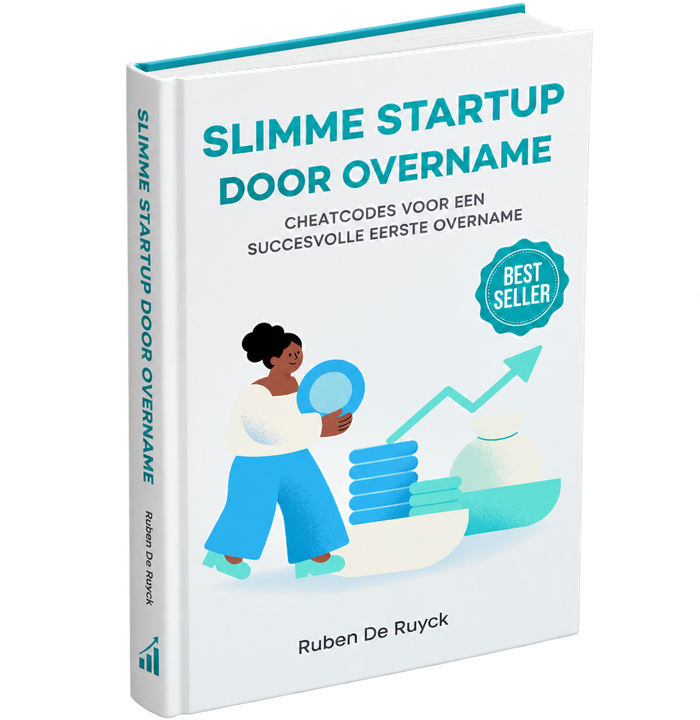

Artikels, checklists, tools en gidsen. Geschreven vanuit de praktijk — voor eigenaars die eerst willen begrijpen voor ze beslissen.
Zes clusters die de vragen dekken die eigenaars ons letterlijk stellen. Nieuwe artikels worden regelmatig toegevoegd.
Wat is mijn bedrijf waard? • EBITDA normaliseren • Welke multiple is realistisch? • Waardedrijvers versus waardelekken
Artikels binnenkort beschikbaar
Hoeveel eigen inbreng voor een overname? • Vendor loan • Earn-out • MBO versus MBI • Financieringsstructuren
Artikels binnenkort beschikbaar
Mijn bedrijf is benaderd door een koper • Voorbereiden op due diligence • Dealstructuur naast prijs
Artikels binnenkort beschikbaar
Vennoot uitkopen • 50/50-deadlock • Waarde bij aandeelhoudersgeschil • Minnelijke exit
Artikels binnenkort beschikbaar
Cashflowcrisis • Schuldeisersakkoord • Gerechtelijke reorganisatie • Verkopen in moeilijkheden
Artikels binnenkort beschikbaar
De eerste 100 dagen • Verkoper blijft aan boord • Earn-out opvolgen • Sleutelmedewerkers behouden
Artikels binnenkort beschikbaar

"Slimme startup door overname" — geschreven door Ruben De Ruyck — is een praktische gids voor ondernemers die niet vanuit het niets willen starten, maar via overname van een bestaand bedrijf. Voor searchers, MBI-kandidaten en wie acquisition entrepreneurship serieus overweegt.
Het boek behandelt de zoektocht, de waardebepaling, de financieringsopties, de juridische valkuilen en de eerste 100 dagen na overname.
Download inleiding
"Built2Sell" — het boek waar Ruben De Ruyck momenteel aan werkt — vertrekt van een eenvoudig idee: een bedrijf dat klaar is om verkocht te worden, is een bedrijf dat goed loopt. Documenteerbare processen, betrouwbare cijfers, juridische orde, sleutelpersoneel dat niet de eigenaar is.
Dat is geen exit-strategie. Dat is goed ondernemerschap. En het is precies waar de Exit Readiness Scan van MASTER M&A aan werkt.
Schrijf in voor updates